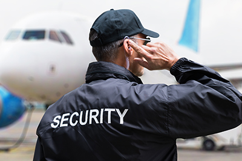
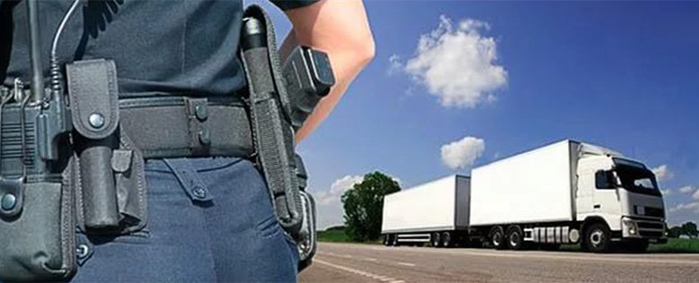
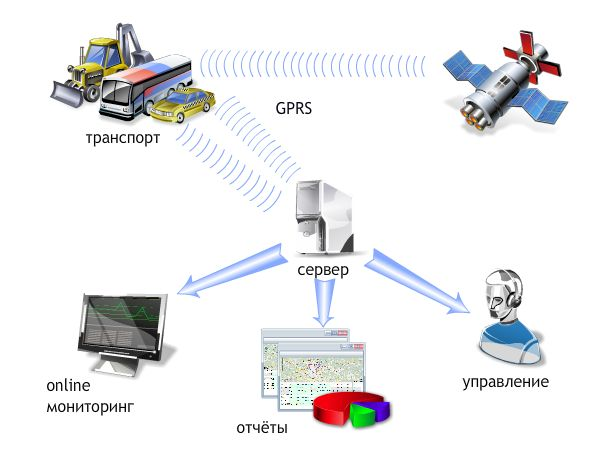

Пультова охорона об'єкту
Захистити свою оселю, офіс, склад, торговий павільйон, квартиру, дачу, будинок за містом Ви зможете, скориставшись такою послугою нашої фірми, як пультова охорона. Сьогодні питання захисту об’єктів власності під час відсутності власника стають все більш актуальними.
Пультова охорона - це виїзд групи швидкого реагування Приватного підприємства «ДЕОС ОХОРОНА» на об’єкт Замовника одразу після надходження на центральний пульт спостереження сигналу тривоги, надісланого встановленими на цьому об’єкті технічними системами.
Завданням організації Пульту Централізованого Спостереження є охорона стаціонарних об'єктів, розподілених на великій площі. Пропонуємо Вам охоронні послуги, що базуються на комп'ютерних системах передачі тривожних повідомлень, які дозволяють здійснювати охорону, за будь-яким з трьох каналів:
- За телефонними лініями
- За GSM каналом
- За радіоканалом
Наш Пульт Централізованого Спостереження забезпечує:
- постійний контроль телефонних ліній у випадку "саботажу" або пошкодження
- автоматичний перехід на резервний канал та продовження охорони об'єкта при аваріях або "саботажі" телефонної лінії.
Комп'ютерна система "ДЕОС ОХОРОНА" призначена для охорони приміщень,офісів, виробничих територій і т.п
Діє пультова охорона наступним чином: при несанкціонованому доступі до приміщення, що охороняється, прийомно-контрольний пристрій надсилає сигнал тривоги:
- на пульт централізованої охорони;
- на мобільний телефон власника об'єкта та (або) його довірених осіб (за домовленістю).
Після отримання сигналу тривоги на об'єкт направляється найближчий екіпаж групи швидкого реагування, співробітники якого забезпечені усім необхідним (зброя, спеціальні засоби та інше). Оперативний черговий контролює та координує дії групи швидкого реагування, котра здійснює всі необхідні заходи, у відповідності до чинного законодавства та інструкцій, узгоджених із Замовником.
Порядок прийому об'єктів під охорону ПЦО
Перед взяттям під охорону об'єкт проходить обстеження нашими фахівцями, при якому відпрацьовуються питання:
- Загальна характеристика об'єкта, його віддаленість від оперативно-чергової частини
- Перелік приміщень, прийнятих під охорону та їхнє розташування
- Які підприємства, будівлі, приміщення примикають до об'єкту
- Технічна укріпленість даху, дверей, вікон, вентиляційних люків, шахт
- Кількість рубежів укріпленості
- За допомогою яких засобів зв'язку планується передача сигналу "тривога"
- Вразливі місця в інженерній укріпленості об'єкта
- Освітленість прилеглої території
- Наявність документів на право власності або оренди даних приміщень
- Режим роботи об'єкта
- Місця збереження матеріальних цінностей та їхня характеристика
- Наявність попередніх крадіжок з об'єкта і як вони здійснювалися
- Можливі шляхи проникнення на об'єкт
- Наявність на об'єкті РЕЖИМНОЇ зони (приміщення)
За результатами обстеження складаються :
- Акт технічної укріпленості об'єкта, в якому даються рекомендації Замовнику щодо інженерного укріплення даного об'єкта. (У випадку відмови Замовника усунути наявні недоліки (наприклад , можливі вразливі місця), ПП "ДЕОС ОХОРОНА" будь-які матеріальні претензії не приймає)
- Схема і кошторис встановлення охоронної сигналізації з розрахунками вартості робіт.
Всі документи надаються Замовникові для вивчення, узгодження позицій та прийняття рішення.
(Обстеження проводяться безкоштовно). Замовник, згідно з представленими рахунками, оплачує вартість обладнання та робіт. Після підписання договору та акту прийняття об'єкта під охорону проводиться монтаж та тестування обладнання, а також підключення даного об’єкта на пульт централізованої охорони.
Фізична охорона об'єкту

Фізична охорона є невід’ємною складовою безпеки бізнесу, її безпосередні дії спрямовані на виявлення, запобігання та припинення:
- несанкціонованих проникнень на об'єкт охорони (на територію, у приміщення);
- перебування осіб без відповідних повноважень на об'єкті охорони;
- протиправного заволодіння майном на об'єкті охорони шляхом крадіжки, пограбування, розбійного нападу, шахрайства тощо;
- протиправного використання майна на об'єкті охорони без відповідних повноважень;
- завдання збитків шляхом умисного пошкодження або знищення майна, протиправних посягань на особисту безпеку осіб та їхню недоторканість.
Враховуючи те, що охорона виконує вищезазначені дії, принципами її роботи є:
- законність;
- захист;
- активність;
- економічна доцільність;
- безперервність;
- конкретність;
- професіоналізм.
Завдяки дотриманню цих принципів, підприємство
«ДЕОС ОХОРОНА», за термін свого існування, завоювало вагомий авторитет по всій Україні та за її межами.
«ДЕОС ОХОРОНА» пропонує високопрофесійні послуги із забезпечення фізичної охорони підприємств, супермаркетів, житла, дачних містечок і котеджів, готелів, стаціонарних та відкритих об'єктів, будівельних об'єктів, торговельних підприємств тощо.
Головними завданнями фізичної охорони є:
- охорона підприємств - охорона матеріальних цінностей, здійснення контрольно-перепускного режиму, організація взаємодії зі службою безпеки підприємства, забезпечення громадського порядку і прийнятого розпорядку діяльності, охорона місць паркування автомобілів співробітників підприємства, протипожежний контроль;
- охорона житла - запобігання загрозі терактів, підтримання громадського порядку на території і в середині під`їздів, огляд горищних та підвальних приміщень, контрольно- перепускний режим для закритого двору, патрулювання території. Охорона житлових будівель може здійснюватись також і за допомогою технічних засобів (систем сигналізації та відеоспостереження);
- охорона дачних містечок і котеджів - підтримання громадського порядку на території, патрулювання території, охорона приватної власності, контроль за рухом автотранспорту. Приймаючи об'єкт під охорону, спеціалісти відділу охорони здійснюють комплексне обстеження, внаслідок чого дають рекомендації та пропозиції щодо усунення причин та умов, які можуть негативно впливати на охорону або викликати можливі негативні наслідки для клієнта. За необхідності об'єкт може бути обладнаний засобами охоронно - пожежної сигналізації, системами відеомоніторингу, підключеними до пульта централізованої охорони;
- охорона готелів - документований контроль допуску відвідувачів, контроль допуску автотранспорту, запобігання нанесенню збитків з боку гостей, відвідувачів та сторонніх осіб, підтримання громадського порядку, охорона об'єкту за допомогою сигналізації, надання допомоги адміністрації і персоналу у нестандартних або надзвичайних ситуаціях;
- охорона будівельних об'єктів - збереження будівельних матеріалів і обладнання, припинення спроб несанкціонованого доступу на об'єкт охорони, контрольно- перепускний режим автотранспорту, патрулювання периметра території, що знаходиться під охороною. Охорона даних об'єктів припускає: постійну присутність на них охоронника, прибуття групи швидкого реагування на об'єкт після отримання сигналу тривоги;
- охорона торговельних підприємств - запобігання спробам крадіжок з боку покупців та персоналу, забезпечення збереження товарно-матеріальних цінностей, громадського порядку на території підприємства.
Охорона вантажів

Охорона вантажів передбачає забезпечення безпеки водіїв, експедиторів і кур'єрів при перевезенні вантажів, а також цілісність самих вантажів та їх прибуття в пункт призначення.
Супровід матеріальних цінностей
Час від часу в кожної компанії виникає необхідність у перевезенні різних вантажів і цінностей, навіть якщо іі діяльність і не пов'язана безпосередньо з транспортуванням вантажів. Вантажні кошти, вантажі, пасажири і водії знаходяться у найбільшій небезпеці під час руху, і різного роду неприємності, пов'язані із втратою документів, грошей або майна можуть призвести до значних збитків. Забезпечення безпеки при супроводі вантажу виконується із врахуванням умов та особливостей маршруту, вантажу та виду конкретного транспортування. Кожного разу розробляється оптимальна схема руху, безпечні місця для відпочинку, АЗС, станції ТО, пункти медичної допомоги.
Можливі різні форми роботи, в залежності від специфіки вантажу, що охороняється. В нас ви можете заключити як довгостроковий договір, так і договір на одноразову послугу. Кількість охоронників та їхня екіпіровка обумовлюються в договорі .
Охорона в дорозі необхідна, якщо замовник зацікавлений в тому, щоб вантаж прийшов в повному обсязі та у відмінному стані. Крім того, наявні добрі відносини між нами та державними і правоохоронними органами на місцях дозволяють нам оперативно вирішувати проблеми, що можуть виникнути в дорозі.
«ДЕОС ОХОРОНА» успішно працює на ринку охоронних послуг з 2007 року.
Охорона і супровід вантажів здійснюється при перевезенні різними видами транспорту на території України. Відділ охорони і супроводу вантажів сформований з числа найбільш підготовлених працівників охорони, які мають практичний стаж супроводу не менше п'яти років. Всі працівники мають державні посвідчення на право роботи в охороні та дозволи на використання зброї, забезпечені мобільним і радіозв'язком, сучасними засобами захисту.
Протягом всього маршруту Замовнику надається детальна інформація про супровід вантажу. Вантаж, що охороняється, забирається в будь-якому населеному пункті України і доставляється під охороною в межах України, можливе також залучення місцевих агентств на території Російської Федерації і Польщі.
Передача вантажу здійснюється за системою «з рук в руки». За бажанням клієнта, спеціалістами «ДЕОС ОХОРОНА» може бути розроблена оптимальна (економічна) схема маршруту.
Охорона громадського порядку
Масові заходи відбуваються лише у спеціально відведених місцях (у будівлях, на майданах, стадіонах тощо), офіційно прийнятих до експлуатації державними комісіями, і за умови дотримання всіма організаціями, що беруть участь у цих масових заходах, норм і правил відповідних інструкцій.
Масові заходи проводять відповідно до затверджених планів, положень щодо їх проведення, програм, правил, регламентів і вимог щодо безпеки учасників. Місце і строки проведення масових заходів узгоджують з відповідними держадміністраціями, органами внутрішніх справ.
Умови безпечного проведення масових заходів:
- залучення необхідних сил і засобів для підтримки громадського порядку, безпеки під час проведення масових заходів;
- вживання додаткових засобів безпеки залежно від запланованої кількості учасників і конкретних умов у день проведення масового заходу;
- охорона громадського порядку у будівлі та прилеглій до неї території необхідною групою охоронників;
При проведенні масових заходів актуальною являється проблема безпеки. В таких умовах борг організаторів прийняти всі необхідні міри по попередженню риску і погроз терористичних актів.
ПП «ДЕОС ОХОРОНА» може забезпечувати реальну допомогу в організації і забезпеченні безпеки при проведенні таких заходів:
- Культурно-спортивні і видовищне: концерти, спортивні змагання, урочисті презентації
- Рекламо-комерційні (ярмарки, презентації, розпродажі )
- Ділові зустрічі і прийоми, проведені у формі шведського столу, фуршету або коктейлю)
- Інші масові заходи -весілля, банкети по поводу різних ювілеїв, урочистостей
До числа загальних задач, які вирішуються при проведенні масових заходів, відносяться:
- Ознайомлення з об'єктом охорони, його попередня зачистка перед початком заходів
- Установлення контакту з міліцією і домовленість співпрацювання і підтримці в необхідних випадках, про передачі в міліцію правопорушників
- Попередження проносу на охороняємий об'єкт зброї, взривчатки, горючих і ядовитих субстанцій, наркотиків, тяжких предметів і каменів;
- Попередження попадання на територію або приміщення заборонених предметів, яке охороняється, осіб із собаками
- Контроль і підтримка порядку на прилеглий території і суміжних приміщеннях (наприклад, контрольовані діями осіб у сусідньому банкетному залі)
За півтори-дві години до початку заходів працівники охоронного підприємства прибувають на об'єкт для проведення її зачистки деяких випадках зачистка об'єкту може бути проведена заздалегідь (наприклад, за добу до початку заходу), але в цьому випадку після закінчення зачистки на об'єкті повинна залишитись охорона.
GPS моніторинг транспорту

Ми надаємо можливість супутникового моніторингу за особистим і комерційним транспортом, а також вантажами, що перевозяться. Моніторинг здійснюється за допомогою GPS передавача, який в режимі реального часу відстежує і передає інформацію про пересування об'єкту.
Монтаж та технічне обслуговування систем охоронної сигналізації, відеонагляду
ПП «ДЕОС ОХОРОНА» виконує монтаж охоронних систем будь-якого виду складності, а також здійснює технічне обслуговування цих систем і моніторинг об'єктів, тобто забезпечує цілодобове спостереження за станом охоронних систем на об'єкті та передачу сигналу «Тривога» групам швидкого реагування.
Оперативне і технічне обслуговування систем охоронно сигналізації з підключенням на ПЦО здійснюється на спец. автомобілі.
Експрес охорона (надання термінової охорони)
Встановлення та обслуговування систем за доступом та домофонів
Особиста охорона за допомгою мобільнрої тривожної кнопки з виїздом наряду ГШР
Страхування на випадок крадіжки
Надання експертної допомоги у критичних ситуаціях (ДТП, полягання на майно, загрози життю та здоров'ю
Надання комплесних юродичних послуг в кримінальних, адміністративних та господарських провадженнях
Інтернет-магазин з продажу охороного та пожежного призначення, систем контролю доступу, відеонагляду, відеодомофонів
Пульт пожежного спостереження
Монтаж та технічне обслуговування пожеженої сигналізаці